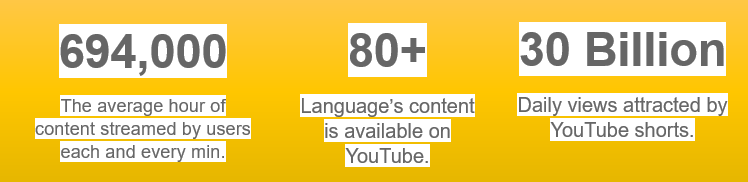
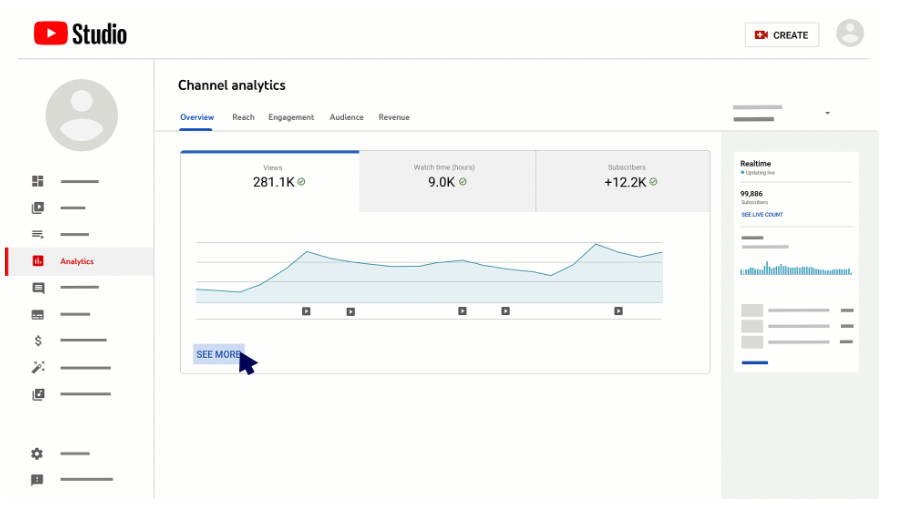

Why you need AI-based Localization for YouTube Channel?
Did you know? YouTube has around 2.6 billion active monthly users in over 100 countries. In India alone, YouTube contributes 50-60% of animated content consumption. With stats like this, YouTube channels must optimize their reach and widen their global opportunity.
Rikaian Technology has helped us increase our subscriber base and reach, even beyond our initial expectations.
- Director of FinTech Media Channel
Why Localize?
Boosting Engagement According to reports, 74% of audience prefer watching content in their local languages. Localization allows you to reach a global audience by adapting your content to their linguistic needs. This opens the gate to new views and subscribers, and better monetization opportunities. Global Viewership Finding the right audience can be tricky. Content designed for one audience might not resonate with the targeted group. However, with localization, you can broaden your reach and find your ideal audience by catering to a wider demographic and aligning your content with their preferences. Outshining Competitors With over 114 million active YouTube channels, standing out can be tough. Localization helps you discover new markets, communities, and underserved genres, giving you an edge over competitors and helping you build a strong brand reputation. Economic Advantage AI significantly cuts costs while maximizing viewership, boosting profits without sacrificing quality. For example, animation studios have reported a threefold increase in efficiency and a 10-15% rise in EBITDA. Localization also attracts more ads and sponsorships from new markets. Cultural Relevance Respecting your audience's cultural and religious sentiments is crucial in today's world. Engaging a diverse audience can be challenging, but AI combined with human expertise ensures culturally rich content without alienating them with errors or mismatches. This approach enhances your brand image and builds better relationships with your audience. Effective Dubbing, Translation, Transcription and mixing overall adds an additional stage and consumes lot of time and cost, While AI-based localization cut downs the Turn around time for end-to-end voiceover. Rikaian Technology: Your One-Stop Solution By blending innovative AI technology with the skills of native linguists, we deliver content that retains its original essence while being culturally relevant and linguistically accurate in over 30 languages.
Book a Demo to experience the magic firsthand.
Follow us on LinkedIn